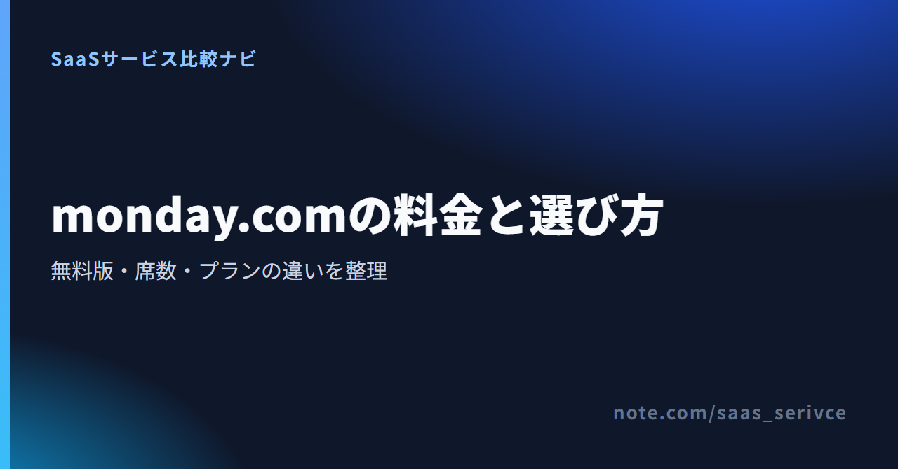

monday.comの料金プラン【2026年版】無料版との違い・人数別の選び方を解説
monday.comは、タスクや案件の進捗をボードで管理するクラウドサービスです。この記事の対象は、業務管理向けのmonday Work Management。
無料版と14日間トライアルは別制度で、有料版には最低席数があります。内容は、料金と機能、人数別の総額。日本からの支払い方法や解約条件も紹介します。なお、「monday.com share price」は運営会社MNDYの株価を指します。
monday.comの料金プランは無料を含む5種類
- Free：無料／最大2席
- Basic：月換算¥1,300／席
- Standard：月換算¥1,650／席
- Pro：月換算¥3,200／席
- Enterprise：個別見積もり
- 有料：最低3席、以後5席単位
記載した金額は、年払いを選んだ場合の日本向け表示です。
月払いと年払いを切り替えながら、人数別の合計額を確認できます。
monday.comの料金プランを月払い・年払いで整理

公式サイトは日本語で表示され、クレジットカード不要の2週間無料体験を案内しています。
Free、Basic、Standardのほか、ProとEnterpriseがあります。 最終価格は請求国と購入席数によって決まり、月払いと年払いでも金額が変わります。
以下は、日本向けの料金ページで10席を選んだ場合の税別価格例です。月払いと年払いを同じ席数で比べられるよう、年払いは1か月あたりの換算額も併記しました。
Freeは最大2席の無料プラン
- 料金：無料
- 対象人数：最大2席
- 主な範囲：3ボード、3 Docs、200を超えるテンプレート
- 向いている人：個人または2人で、Freeの上限内に収まる人
Freeは期限付きの試用版とは違い、無料のまま使い続けられるプランです。
Basicはシンプルな業務管理向け
- 月払い：1席あたり月¥1,530（10席合計で月¥15,300）
- 年払い：1席あたり月換算¥1,300（10席合計で月換算¥13,000）
- 主な対象：Freeの席数では足りないチーム
- 主な機能：無制限のアイテム、無制限の閲覧者
この単価は、すべての席数や請求国にそのまま当てはまりません。最終額は購入画面で確かめてください。
Standardは複数人の業務管理を広げたいチーム向け
- 月払い：1席あたり月¥1,990（10席合計で月¥19,900）
- 年払い：1席あたり月換算¥1,650（10席合計で月換算¥16,500）
- 主な対象：工程を複数の表示形式で管理し、社外メンバーとも共有したいチーム
- 主な機能：タイムライン、ガント、カレンダー、ゲスト、自動化・連携各250回／月
工程の可視化やゲスト参加が必要なチームには、Standardが第一候補です。
Proは高度な管理機能が必要なチーム向け
- 月払い：1席あたり月¥3,890（10席合計で月¥38,900）
- 年払い：1席あたり月換算¥3,200（10席合計で月換算¥32,000）
- 主な対象：工数管理や公開範囲の制御まで行いたいチーム
- 主な機能：時間追跡、非公開ボード・Docs、高度な列、自動化・連携各25,000回／月
Proの機能を試せる14日間のトライアルがあります。契約前にPro機能を試し、Standardで足りるかを判断できます。
Enterpriseは個別見積もり
Enterpriseは「Custom price」と表示される個別見積もりです。問い合わせ時は席数を伝え、必要な機能を次のようにまとめます。
- 複数階層の権限
- ポートフォリオ・リソース管理
- セキュリティとガバナンス
公開レビューに出ている個別企業の契約額は、自社の予算には流用できません。
同じ10席でも、月払いと年払いでは1席単価と合計額が変わります。対象製品と請求国を指定し、購入席数と請求周期を選ぶと、自社の総額が表示されます。
人数と席数の仕組みで実際の請求額が変わる
有料プランは最低3席からで、それを超えると5席単位で購入します。 1席単価に実人数を掛けるだけでは、請求額と合わない場合があります。
有料プランは最低3席から契約する
1人で利用する場合も、最低3席分の契約になります。個人でFreeの上限を超える場合は、3席分の料金に見合うかどうかで判断します。
4〜5人と6〜10人では購入する席数が異なる
- 3人で利用：3席を購入
- 4〜5人で利用：5席を購入
- 6〜10人で利用：10席を購入
とくに4人や6人は、実人数と購入席数に差が出ます。採用や外部メンバーの参加予定があるチームは、契約期間中の増員も見込んで席数を決めます。
年払いは割引率だけでなく年間総額で判断する
年払いは月払いより安くなります。ただし、使わない席があれば、その料金も1年分かかります。比較条件は、通貨・プラン・購入席数。条件をそろえたうえで、1年分の支払額を比べます。
予算は、4人なら5席、6人なら10席として組みます。
無料プランと14日間トライアルでできること・制限
Freeは期限なく使える無料プラン、14日間トライアルはPro機能を期間限定で試す制度です。 monday.comの無料版を探している場合は、この2つを分けて判断します。
Freeは最大2席で期限なく使える
Freeは最大2席まで使え、3ボードと3 Docsが含まれます。テンプレートも200を超え、2人までならFreeの上限で足りるかを有料契約の前に試せます。
無料で困りやすい制限を先に確認する
Freeでは自動化と外部サービス連携を使えず、閲覧者やゲストも招待できません。ストレージは500MB、アイテムはアカウント全体で200件まで。ダッシュボードも1ボードにしか接続できません。3ボードに収まっても、タスクが増える場合や社外の人と共有したい場合には向きません。
14日間のProトライアルはFreeとは別制度
14日間のトライアルではPro機能を試せますが、終了後に有料プランへ移らないと、いったん非アクティブになります。画面からFreeを選べば、無料利用へ移れます。データは残りますが、3ボードやアイテム数の上限を超える分は閲覧専用。Freeへ移る前に、次の対応を済ませます。
- 非公開・共有可能ボードをメインボードへ変換
- ユーザー数を2人以下に変更
長く無料で使うならFree、時間追跡や非公開ボードを試すなら14日間トライアルです。
有料プランで増える機能と選び方
必要な機能が含まれる最も安いプランを選びます。 使う機能に合わせれば、余分な料金を抑えられます。
Standardを検討する機能
Standardではタイムライン、ガント、カレンダーを使え、ゲストも招待できます。自動化と外部サービス連携はそれぞれ月250回まで。工程を時系列で見たいチームに向き、社外メンバーの招待や少量の定型処理の自動化にも対応します。
Proを検討する機能
Proでは時間追跡、非公開ボード・Docs、高度な列を利用できます。自動化と連携の上限はそれぞれ月25,000回。工数を記録したいチームや、案件ごとに閲覧範囲を分けたい組織の候補です。
Enterpriseを検討する管理要件
Enterpriseでは、Proの機能に加えて複数階層の権限を利用できます。セキュリティとガバナンス、ポートフォリオ・リソース管理も対象です。自動化と連携はそれぞれ月25万回まで。部門をまたいで権限や資源配分を管理する組織は、営業窓口へ要件を伝えて見積もりを取ります。
ガントや少量の自動化にはStandard、時間追跡や非公開領域にはProが合います。組織全体を統制するならEnterpriseです。
monday Work ManagementとCRMなどは料金が別
monday.comには、業務管理のほか、営業管理・開発・顧客対応向けの製品があります。 本記事の対象はmonday Work Management。CRM、Dev、Serviceには別料金が適用されます。
本記事で扱うのはmonday Work Management
monday Work Managementは、タスクやプロジェクト、日常業務を管理する製品です。ここまで紹介したFree、Basic、Standard、Pro、Enterpriseの料金は、この製品のものです。
monday CRMは専用の料金プランを確認する
「monday.com crm pricing」を調べている場合は、CRM専用の料金プランを見ます。3席・年払いの表示例は、Basicが1席あたり月$12、Standardが$17、Proが$28で、いずれも税別。請求国などで表示額は変わるため、Work Managementの単価はCRMにそのまま流用できません。
DevとServiceも用途と料金が分かれる
DevとServiceも別製品です。Devの3席・年払いの表示例は、Basicが1席あたり月$9、Standardが$12、Proが$20です。ServiceはStandardが$31、Proが$45で、いずれも税別。複数製品を導入する場合は、製品ごとに席数と費用を分けて予算化します。
日本からの支払い・請求書・消費税を確認する
公式料金ページにはJCBを含む主要カードとPayPalが掲載され、請求書は管理画面から取得できます。 支払い方法は地域によって異なるため、購入画面で利用できる手段を確かめます。
請求通貨と最終価格は購入画面で決まる
料金ページの表示通貨は請求国によって変わります。この記事にあるJPYやUSDの条件付き表示例が、日本からの契約にもそのまま適用されるとは限りません。最終額は購入画面の価格。選んだ製品と席数に加え、請求周期と請求国も反映されます。
公式料金ページにはJCB・PayPalも掲載
公式料金ページには、次の支払い方法が掲載されています。
- クレジットカード：Visa／Mastercard／Amex／Discover／Diners／JCB／Carte Bleue／UnionPay
- オンライン決済：PayPal
利用できる手段は地域によって異なるため、日本発行カードの可否は購入画面で確かめてください。小切手、郵便為替、注文書には対応していません。
請求書は管理画面から確認・ダウンロードできる
管理者は請求画面から請求書を閲覧し、ダウンロードできます。請求書に必要な宛名と請求先情報は、契約前に登録しておきます。
消費税やインボイスの扱いは税理士へ確認する
請求書を取得できても、日本の適格請求書の要件を満たすとは限りません。消費税やインボイスの扱いは契約形態や経理処理によって変わるため、詳しくは税理士に確認してください。
決済画面には、表示通貨と購入席数がまとまっています。請求周期と請求先情報も同じ画面で見直せます。
解約・ダウングレード・返金の条件
解約は管理者がブラウザから行い、返金の有無によって利用終了のタイミングが変わります。 年払いを選ぶ前に、更新日と返金条件まで見ておきます。
解約は管理者がブラウザから手続きする
解約手続きは管理者がブラウザから行います。アプリを削除しただけでは解約にならないため、管理画面で契約状態を確認します。
初回購入は条件を満たせば返金対象になる
初回購入は、購入後30日以内に書面で申請すると、未使用期間の日割り返金の対象になります。ただし、返金可否は個別に判断され、返金が伴う解約ではアクセスが直ちに停止します。
返金なしの解約は支払済み期間末まで利用できる
返金対象外の月払い・年払い契約を解約した場合は、支払い済み期間の末日まで利用できますが、その後は自動更新されません。既存顧客が契約期間末で解約する場合、通知期限は契約終了日の30日前です。
ダウングレード前にFreeの上限を確認する
Freeへ下げてもデータは残ります。ただし、3ボードやアイテム数の上限を超える既存データは閲覧専用。ダウングレード前に、次の準備を済ませてください。
- 非公開・共有可能ボードをメインボードへ変換
- ユーザー数を2人以下に変更
- 編集を続けるデータをFreeの範囲へ調整
年払いへ進む前に、次回更新日と通知期限を社内の契約台帳へ記録しておけば、更新を見落としにくくなります。
monday.comの料金についてよくある質問
monday.comは無料で使える？
はい。Freeは最大2席で3ボードと3 Docsを使え、200を超えるテンプレートも含まれます。Pro機能を試せる14日間トライアルは、期限なく使えるFreeとは別です。
1人で有料プランを契約すると何席分になる？
有料プランは最低3席からなので、1人で契約する場合も3席分が基準です。Freeで足りない個人は、1席単価で考えず、3席分の総額を基準に有料化を判断します。
Enterpriseの料金はいくら？
Enterpriseは公開定価のない個別見積もりです。営業窓口へ伝えるのは、席数と必要な管理機能。複数階層の権限やセキュリティ、ポートフォリオ・リソース管理などが対象です。40席を超える場合も、正確な価格は見積もりで決まります。
monday CRMも同じ料金で使える？
monday CRMの料金はWork Managementとは異なります。別製品・別料金なので、具体的な費用はCRM専用の料金プランで確かめてください。
まとめ：実人数ではなく購入席数で総額を比べる
個人または2人なら、期限のないFreeから始められます。有料版は最低3席で、それを超えると5席単位。ガントやゲスト招待が必要ならStandard、時間追跡や非公開ボードが必要ならProを選びます。
購入予定の席数と請求周期を選ぶと、契約前に合計額を見比べられます。
関連するnote
- monday.comの評判と向いている人を確認する：https://note.com/saas_serivce/n/nef71ee87d15a